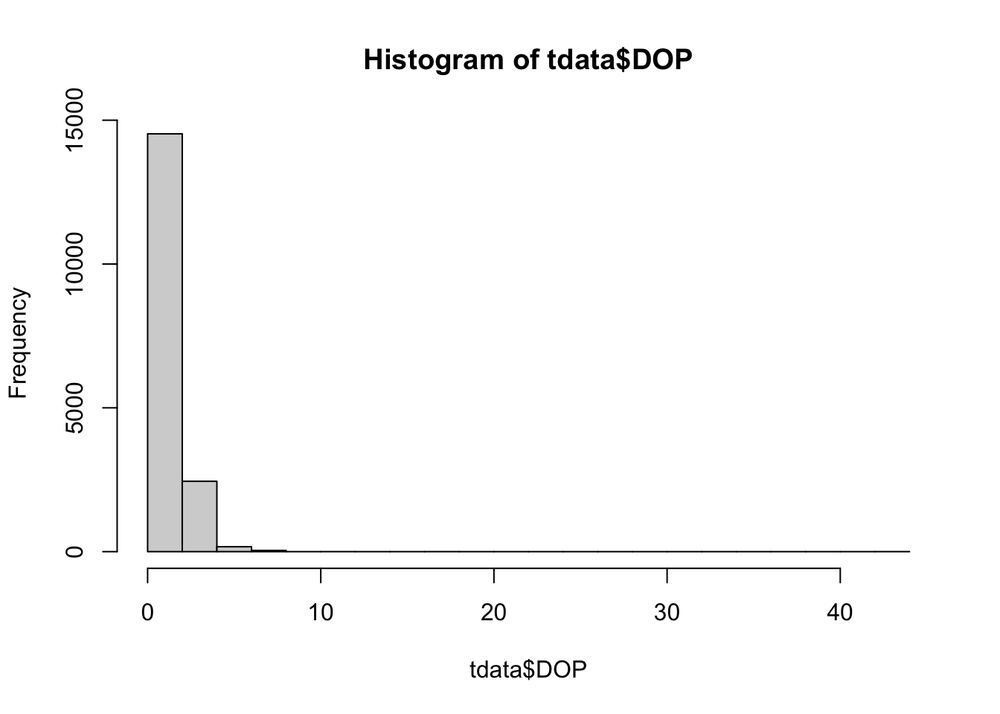
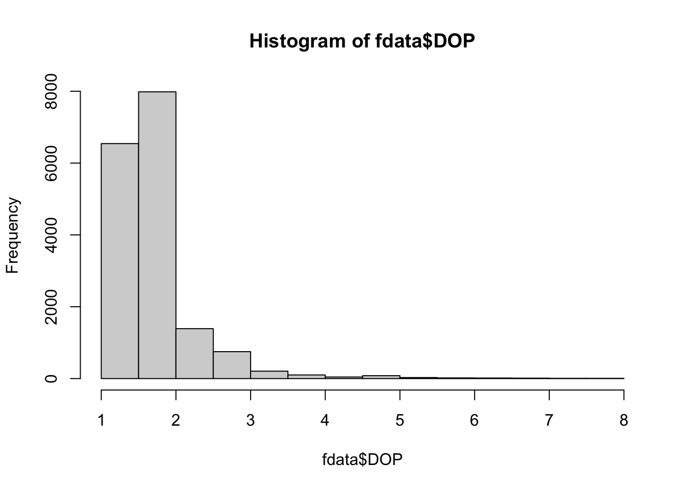
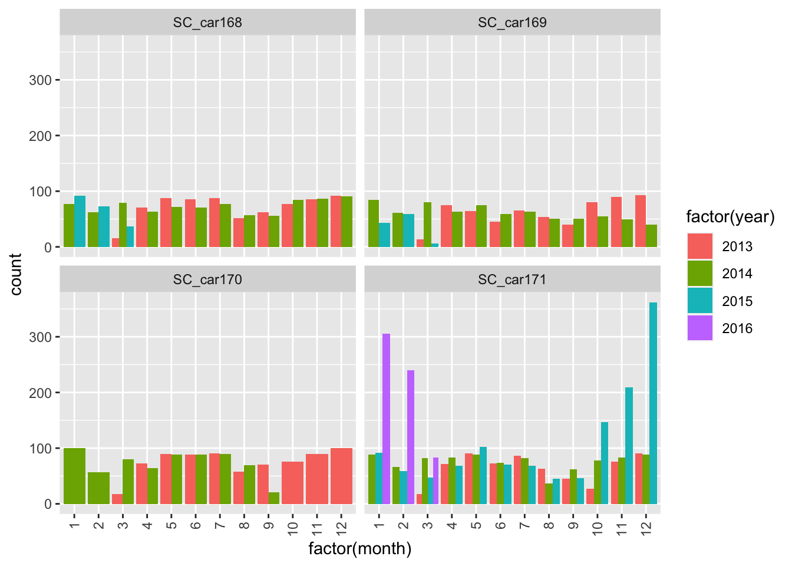
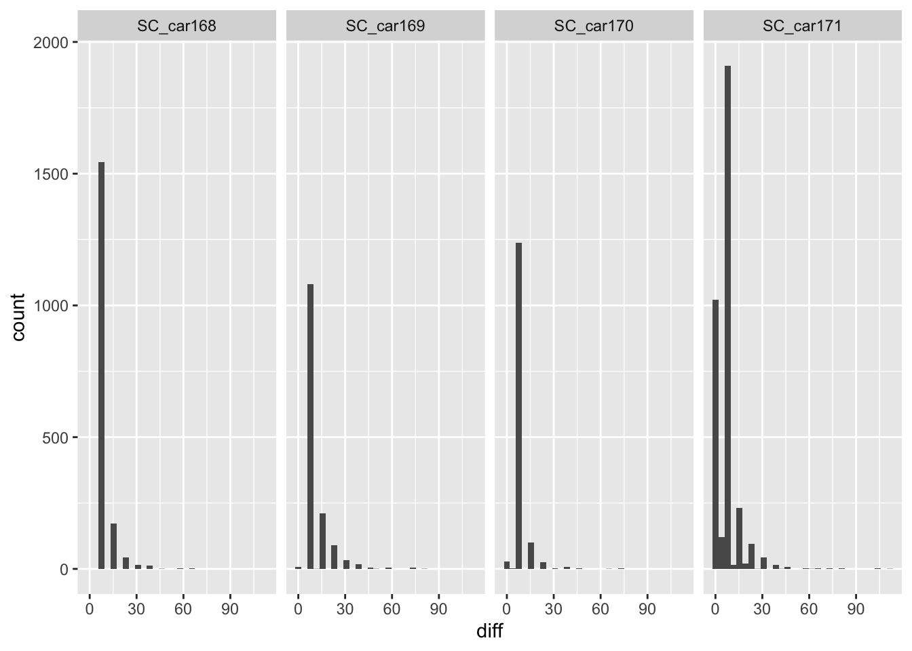
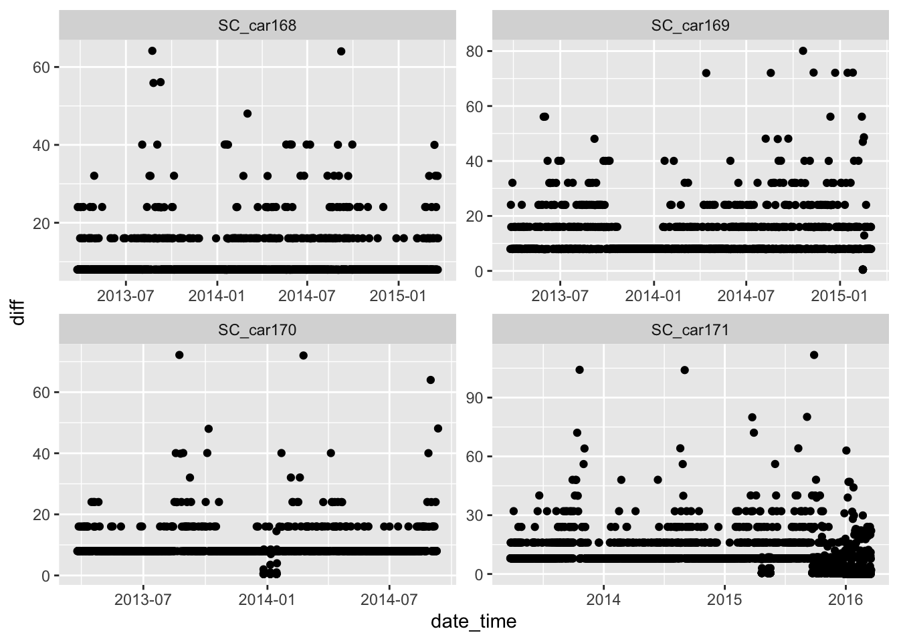
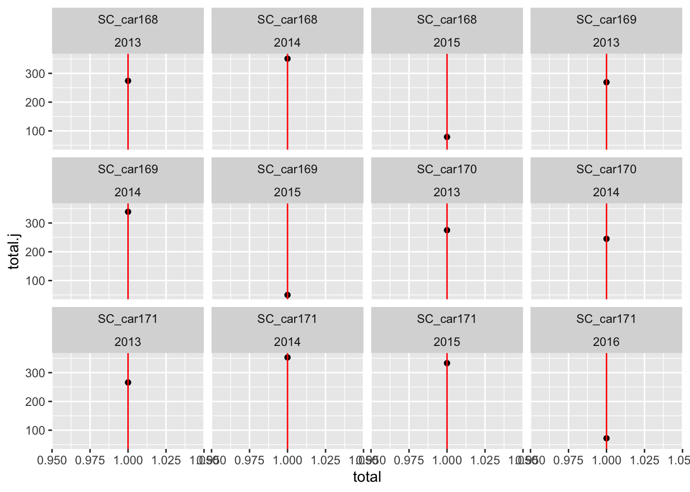

# Read in our data files.
library(readr)
library(sf)
library(readxl)
library(dplyr)
library(lubridate)
library(ggplot2)
ref_raw <- read_csv("raw_data/Mountain caribou in British Columbia-reference-data.csv",
name_repair = "universal")
loc_raw <- read_xlsx("raw_data/Mountain caribou.xlsx")Introduction to Telemetry Data
How to QA and summarise your Telemetry Data
In this course we will be using Telemetry data from Mountain Caribou (Rangifer terendus) herds in the Peace region of British Columbia. While the full dataset and metadata can be found on movebank, we will be working on a modified subset throughout this course. TEST
1. Reading our data into R.
Our first step is to see what our data looks like. In this course we will be providing two csv files (Mountain caribou in British Columbia-reference-data.csv and Mountain caribou.csv).
Lets take a look….
head(ref_raw)# A tibble: 6 × 26
tag.id animal.id animal.taxon deploy.on.date deploy.off.date
<chr> <chr> <chr> <time> <time>
1 151.51 HR_151.510 Rangifer tarandus NA NA
2 C04a GR_C04 Rangifer tarandus NA 59:00
3 C03 GR_C03 Rangifer tarandus NA NA
4 151.805 HR_151.805 Rangifer tarandus NA NA
5 151.76 HR_151.760 Rangifer tarandus NA NA
6 151.72 HR_151.720 Rangifer tarandus NA NA
# ℹ 21 more variables: animal.death.comments <chr>, animal.life.stage <chr>,
# animal.reproductive.condition <chr>, animal.sex <chr>,
# animal.taxon.detail <chr>, attachment.type <chr>,
# deploy.off.latitude <dbl>, deploy.off.longitude <dbl>,
# deploy.on.latitude <dbl>, deploy.on.longitude <dbl>,
# deploy.on.person <chr>, deployment.comments <chr>,
# deployment.end.comments <chr>, deployment.end.type <chr>, …names(ref_raw) [1] "tag.id" "animal.id"
[3] "animal.taxon" "deploy.on.date"
[5] "deploy.off.date" "animal.death.comments"
[7] "animal.life.stage" "animal.reproductive.condition"
[9] "animal.sex" "animal.taxon.detail"
[11] "attachment.type" "deploy.off.latitude"
[13] "deploy.off.longitude" "deploy.on.latitude"
[15] "deploy.on.longitude" "deploy.on.person"
[17] "deployment.comments" "deployment.end.comments"
[19] "deployment.end.type" "deployment.id"
[21] "manipulation.type" "study.site"
[23] "tag.beacon.frequency" "tag.manufacturer.name"
[25] "tag.model" "tag.serial.no" ref_short <- ref_raw %>%
select(tag.id, animal.id, deploy.on.date, animal.sex, animal.reproductive.condition,
deployment.end.type,tag.model, tag.manufacturer.name, tag.serial.no)
head(loc_raw)# A tibble: 6 × 14
event.id timestamp location.long location.lat DOP FixType herd
<dbl> <chr> <dbl> <dbl> <dbl> <chr> <chr>
1 2270202009 01:00.0 -124. 55.9 1 val. GPS-3D Scott
2 2270202041 01:00.0 -124. 55.9 1 val. GPS-3D Scott
3 2270202100 01:00.0 -124. 55.9 1 val. GPS-3D Scott
4 2270202901 01:00.0 -123. 55.8 1 val. GPS-3D Scott
5 2270202132 01:00.0 -123. 55.9 1 val. GPS-3D Scott
6 2270202890 01:00.0 -123. 55.9 1 val. GPS-3D Scott
# ℹ 7 more variables: study.specific.measurement <chr>, sensor.type <chr>,
# individual.taxon.canonical.name <chr>, tag.local.identifier <chr>,
# individual.local.identifier <chr>, study.name <chr>, date <chr>We can combine these two dataset and keep only the columns which are of interest
all_data <- left_join(loc_raw, ref_raw, by = c('tag.local.identifier' = 'tag.id') )
all_data <- all_data %>%
select(event.id, location.long, location.lat, DOP, FixType, herd,
study.specific.measurement, sensor.type, tag.local.identifier, date, animal.id,
animal.sex, animal.reproductive.condition, tag.manufacturer.name, tag.model )2. Clean and QA the data
2a. Data input errors and column formats
Now we have a single data set we can QA the data and provide more useful columns for further analysis.
head(all_data)# A tibble: 6 × 15
event.id location.long location.lat DOP FixType herd study.specific.measu…¹
<dbl> <dbl> <dbl> <dbl> <chr> <chr> <chr>
1 2.27e9 -124. 55.9 1 val. G… Scott Summer
2 2.27e9 -124. 55.9 1 val. G… Scott Summer
3 2.27e9 -124. 55.9 1 val. G… Scott Summer
4 2.27e9 -123. 55.8 1 val. G… Scott Summer
5 2.27e9 -123. 55.9 1 val. G… Scott Winter
6 2.27e9 -123. 55.9 1 val. G… Scott Summer
# ℹ abbreviated name: ¹study.specific.measurement
# ℹ 8 more variables: sensor.type <chr>, tag.local.identifier <chr>,
# date <chr>, animal.id <chr>, animal.sex <chr>,
# animal.reproductive.condition <chr>, tag.manufacturer.name <chr>,
# tag.model <chr># check if there are NA's in the data
apply(all_data, 2, function(x) any(is.na(x))) event.id location.long
FALSE TRUE
location.lat DOP
TRUE FALSE
FixType herd
FALSE TRUE
study.specific.measurement sensor.type
TRUE FALSE
tag.local.identifier date
FALSE FALSE
animal.id animal.sex
FALSE FALSE
animal.reproductive.condition tag.manufacturer.name
TRUE FALSE
tag.model
FALSE # Lets filter out any missing values
length(all_data$event.id)[1] 17197tdata <- all_data %>%
filter(!is.na(date)) %>%
filter(!is.na(location.long)) %>%
filter(!is.na(location.lat))
# Herd
unique(tdata$herd)[1] "Scott" "Burnt Pine" NA # two missing herd values which we can fill in (or delete)
tdata <- tdata %>%
mutate(herd = case_when(
animal.id == "BP_car043" ~ "Burnt Pine",
animal.id == "SC_car170" ~ "Scott",
.default = herd
))
#length(tdata$event.id)Now lets covert the timestamp into a usable format
# calculate time differences
tdata <- tdata %>%
mutate(date_time = ymd_hms(date)) Warning: There was 1 warning in `mutate()`.
ℹ In argument: `date_time = ymd_hms(date)`.
Caused by warning:
! 5 failed to parse.# owch we still have an error in this dataset
# lets see if we can find it.....
head(sort(unique(tdata$date)))[1] "2003-12-12 13:03:29.000" "2003-12-13 09:03:10.000"
[3] "2003-12-14 05:03:11.000" "2003-12-15 01:03:10.000"
[5] "2003-12-15 21:04:00.000" "2003-12-16 17:03:10.000"tail(sort(unique(tdata$date)))[1] "2016-03-16 10:01:00.000" "2016-03-16 17:49:00.000"
[3] "2016-03-16 19:49:00.000" "2016-03-17 17:53:00.000"
[5] "2016-03-17 19:53:00.000" "NA" tdata <- tdata %>%
filter(date != "NA")
tdata <- tdata %>%
mutate(date_time = ymd_hms(date))
#head(tdata$date_time)
# Note the Universal Coordinated Time Zone
# lets split this data format into something more useful
tdata <- tdata %>%
mutate(year = year(date_time )) %>%
mutate(month = month(date_time ),
day = day(date_time),
hour = hour(date_time),
minute = minute(date_time))2a. QA Spatial accuracy values
Now we have fixed our data entry problems we also want to review the spatial accuracy. We have two metrics: DOP (Dilution of Precision), and a Fix Type.
# review the lat / longs
range(tdata$location.lat)[1] 55.2249 155.4764hist(tdata$location.lat)
# above 65 latidude
range(tdata$location.long)[1] -123.6684 -22.0000hist(tdata$location.long)
# greater than -100 longitude.
tdata <- tdata %>%
filter(location.long <= -100) %>%
filter(location.lat <= 65)
# DOP
range (tdata$DOP)[1] 1.0 43.1hist(tdata$DOP)
unique(tdata$DOP) [1] 1.0 1.2 1.4 1.6 1.8 2.0 2.2 2.4 2.6 2.8 3.0 3.2 3.4 3.6 3.8
[16] 4.0 4.2 4.4 4.6 4.8 5.0 5.2 5.4 5.6 5.8 6.4 6.6 7.2 7.8 7.9
[31] 11.8 18.0 43.1# for this example we only want to keep fixes with a DOP less than 10m
fdata <- tdata %>%
filter(DOP <= 10)
hist(fdata$DOP)
unique(tdata$DOP) [1] 1.0 1.2 1.4 1.6 1.8 2.0 2.2 2.4 2.6 2.8 3.0 3.2 3.4 3.6 3.8
[16] 4.0 4.2 4.4 4.6 4.8 5.0 5.2 5.4 5.6 5.8 6.4 6.6 7.2 7.8 7.9
[31] 11.8 18.0 43.1# Fix Type :
fixtype <- fdata %>%
group_by(FixType) %>%
summarise(count = n())
fixtype# A tibble: 3 × 2
FixType count
<chr> <int>
1 GPS-2D 92
2 GPS-3D 291
3 val. GPS-3D 16801# remove the 2d locations
fdata <- fdata %>%
filter(FixType != "GPS-2D")
# see what the data looks like
glimpse(fdata)Rows: 17,092
Columns: 21
$ event.id <dbl> 2270202009, 2270202041, 2270202100, 2270…
$ location.long <dbl> -123.6036, -123.5987, -123.5903, -123.49…
$ location.lat <dbl> 55.90000, 55.87343, 55.87470, 55.83741, …
$ DOP <dbl> 1, 1, 1, 1, 1, 1, 1, 1, 1, 1, 1, 1, 1, 1…
$ FixType <chr> "val. GPS-3D", "val. GPS-3D", "val. GPS-…
$ herd <chr> "Scott", "Scott", "Scott", "Scott", "Sco…
$ study.specific.measurement <chr> "Summer", "Summer", "Summer", "Summer", …
$ sensor.type <chr> "gps", "gps", "gps", "gps", "gps", "gps"…
$ tag.local.identifier <chr> "car170", "car170", "car170", "car170", …
$ date <chr> "2013-09-23 10:01:00.000", "2013-10-09 1…
$ animal.id <chr> "SC_car170", "SC_car170", "SC_car170", "…
$ animal.sex <chr> "f", "f", "f", "f", "f", "f", "f", "f", …
$ animal.reproductive.condition <chr> "with calf: N", "with calf: N", "with ca…
$ tag.manufacturer.name <chr> "ATS", "ATS", "ATS", "ATS", "ATS", "ATS"…
$ tag.model <chr> "GPS Iridium", "GPS Iridium", "GPS Iridi…
$ date_time <dttm> 2013-09-23 10:01:00, 2013-10-09 10:01:0…
$ year <dbl> 2013, 2013, 2013, 2014, 2013, 2014, 2014…
$ month <dbl> 9, 10, 10, 8, 11, 8, 9, 12, 7, 11, 6, 12…
$ day <int> 23, 9, 30, 11, 10, 7, 19, 6, 8, 24, 20, …
$ hour <int> 10, 10, 10, 10, 2, 10, 2, 18, 18, 2, 2, …
$ minute <int> 1, 1, 1, 1, 1, 1, 2, 2, 1, 1, 2, 0, 0, 1…# lets check if this column is any use?
unique(fdata$sensor.type)[1] "gps"# remove the columns that we dont need
fdata <- fdata %>%
select(-FixType, -DOP, -date, -study.specific.measurement, -sensor.type, -event.id)Output cleaned
We can output out cleaned data as a table
write_csv(fdata, file.path("clean_data", "caribou.csv"))Convert to spatial file and export
# convert to a sf object and transform to BC Albers
bou <- st_as_sf(fdata, coords = c("location.long", "location.lat"),
crs = 4326, remove = FALSE) |>
st_transform(3005)export as .gpkg
write_sf(bou, file.path("clean_data", "caribou.gpkg"))We can also export to a .shp file
write_sf(bou, file.path("clean_data", "caribou.shp"))
# note warning on names for shapefileGenerating tabular summaries
Now we have clean data to work with we can get to the fun data exploration part!
#bou = read.csv(file.path("clean_data", "caribou.csv")
# or
bou_sf = read_sf(file.path("clean_data", "caribou.gpkg"))
bou <- st_drop_geometry(bou_sf)
head(bou)# A tibble: 6 × 15
location.long location.lat herd tag.local.identifier animal.id animal.sex
<dbl> <dbl> <chr> <chr> <chr> <chr>
1 -124. 55.9 Scott car170 SC_car170 f
2 -124. 55.9 Scott car170 SC_car170 f
3 -124. 55.9 Scott car170 SC_car170 f
4 -123. 55.8 Scott car170 SC_car170 f
5 -123. 55.9 Scott car170 SC_car170 f
6 -123. 55.9 Scott car170 SC_car170 f
# ℹ 9 more variables: animal.reproductive.condition <chr>,
# tag.manufacturer.name <chr>, tag.model <chr>, date_time <dttm>, year <dbl>,
# month <dbl>, day <int>, hour <int>, minute <int>glimpse(bou)Rows: 17,092
Columns: 15
$ location.long <dbl> -123.6036, -123.5987, -123.5903, -123.49…
$ location.lat <dbl> 55.90000, 55.87343, 55.87470, 55.83741, …
$ herd <chr> "Scott", "Scott", "Scott", "Scott", "Sco…
$ tag.local.identifier <chr> "car170", "car170", "car170", "car170", …
$ animal.id <chr> "SC_car170", "SC_car170", "SC_car170", "…
$ animal.sex <chr> "f", "f", "f", "f", "f", "f", "f", "f", …
$ animal.reproductive.condition <chr> "with calf: N", "with calf: N", "with ca…
$ tag.manufacturer.name <chr> "ATS", "ATS", "ATS", "ATS", "ATS", "ATS"…
$ tag.model <chr> "GPS Iridium", "GPS Iridium", "GPS Iridi…
$ date_time <dttm> 2013-09-23 03:01:00, 2013-10-09 03:01:0…
$ year <dbl> 2013, 2013, 2013, 2014, 2013, 2014, 2014…
$ month <dbl> 9, 10, 10, 8, 11, 8, 9, 12, 7, 11, 6, 12…
$ day <int> 23, 9, 30, 11, 10, 7, 19, 6, 8, 24, 20, …
$ hour <int> 10, 10, 10, 10, 2, 10, 2, 18, 18, 2, 2, …
$ minute <int> 1, 1, 1, 1, 1, 1, 2, 2, 1, 1, 2, 0, 0, 1…Many questions we can ask here:
- how many herds do we have?
- how many animals in each herd?
- what is the sex ratio of collared animals?
- what is the duration of each collar? Start and end years?
no_herds = unique(bou$herd)
no_records <- bou %>%
group_by(herd) %>%
summarise(count = n())
no_animals_id <- bou %>%
group_by(herd, animal.id) %>%
summarise(count = n())`summarise()` has grouped output by 'herd'. You can override using the
`.groups` argument.no_animals_sex <- bou %>%
group_by(herd, animal.sex) %>%
summarise(count = n())`summarise()` has grouped output by 'herd'. You can override using the
`.groups` argument.collar_type <- bou %>%
group_by(herd, tag.manufacturer.name, tag.model) %>%
summarise(count = n())`summarise()` has grouped output by 'herd', 'tag.manufacturer.name'. You can
override using the `.groups` argument.There is alot of data here. For the next section of this course we will just concentrate on the Scott Herd.
# Filter to keep the Scott herd only
sbou <- bou %>%
filter(herd == "Scott")
# tidy the data by removing columns that are redundant
sbou <- sbou %>% select(-herd, -tag.local.identifier, -tag.manufacturer.name, -tag.model)
# how many animals?
no_animals <- unique(sbou$animal.id)
# lets look at the time period:
p1 <- ggplot(sbou, aes(year, fill = animal.id)) +
geom_bar(position = "dodge")
# duration of the collars within the Scott herd.
table_max <- sbou %>%
select(animal.id, date_time) %>%
slice_max(date_time, by = animal.id)
colnames(table_max)<- c("animal.id","max")
table_min <- sbou %>%
select(animal.id, date_time) %>%
slice_min(date_time, by = animal.id)
colnames(table_min)<- c("animal.id","min")
dur <- left_join(table_max, table_min, by = join_by(animal.id)) %>%
distinct() %>%
mutate(duration = max - min) %>%
mutate(dur_days = round( duration,1)) %>%
mutate(dur_hrs = round(as.numeric(dur_days)*24,1)) %>%
#mutate(dur_days = round( dur_hrs/24,1)) %>%
mutate(year_start = year(min),
year_end = year(max))
dur_plot <- ggplot(dur, aes(y=factor(animal.id))) +
geom_segment(aes(x=min, xend=max, y=factor(animal.id), yend=factor(animal.id)), linewidth = 3)+
xlab("Date") + ylab("Tag")
dur_plot
# months of the year.
p_duration <- ggplot(sbou, aes(factor(month), fill = factor(year)))+
geom_bar(position = "dodge") +
#xlim(1,12)+
facet_wrap(~animal.id)+
theme(axis.text.x = element_text(angle = 90, vjust = 0.5, hjust=1))
p_duration
Lets check the number of fixes per month per individual
we can see that the number of fixes are relatively steady throughout the years for all individuals except SC_car171? something looks strange here:
Larger spikes in Oct 2015 and Feb 2016
head(sbou)# A tibble: 6 × 11
location.long location.lat animal.id animal.sex animal.reproductive.condition
<dbl> <dbl> <chr> <chr> <chr>
1 -124. 55.9 SC_car170 f with calf: N
2 -124. 55.9 SC_car170 f with calf: N
3 -124. 55.9 SC_car170 f with calf: N
4 -123. 55.8 SC_car170 f with calf: N
5 -123. 55.9 SC_car170 f with calf: N
6 -123. 55.9 SC_car170 f with calf: N
# ℹ 6 more variables: date_time <dttm>, year <dbl>, month <dbl>, day <int>,
# hour <int>, minute <int>sbou <- sbou %>%
arrange(animal.id, date_time)
sbou_dur <- sbou %>%
mutate(time = as.POSIXct(date_time, format = "%y/%d/%m %H:%M:%S")) %>%
group_by(animal.id) %>%
mutate(diff = difftime(time, lag(time), units = c("hours")),
diff = as.numeric(diff))
# we can see a big range in the time intervals for the fixes
range(sbou_dur$diff, na.rm = TRUE)[1] 0.01666667 111.75000000# most fall in the less than than 10
hist(sbou_dur$diff)
# lets look at the individual animals
ggplot(sbou_dur, aes(diff)) +
geom_histogram(bins=30) +
facet_grid(.~animal.id)Warning: Removed 4 rows containing non-finite values (`stat_bin()`).
# much of the problem is with the SC_car171 individual
ggplot(sbou_dur, aes(y = diff, x = date_time)) +
geom_point() +
facet_wrap(.~animal.id, scales = "free")Warning: Removed 4 rows containing missing values (`geom_point()`).
# suspect that these are a mortality signal from ?
# some collars have a higher fix rate (SC_car168 consistent less than 10 hr difference)To create a standardized fix per day, lets take the first fix per day. This could be based on a number of factors, depending on our research question we want to ask
# we can subset base on a Julian date
sbou_dur <- sbou_dur %>%
mutate(
date2=as.Date(date_time, format = '%Y-%m-%d'),
jdate=julian(date2)
)
# Check the multiple counts of anaimals per day
counts.per.day.jdate <- sbou_dur %>%
group_by(animal.id, jdate, year) %>%
summarise(total = n(), unique = unique(jdate)) %>%
group_by(animal.id, total, year) %>%
summarise(total.j = n()) `summarise()` has grouped output by 'animal.id', 'jdate'. You can override
using the `.groups` argument.
`summarise()` has grouped output by 'animal.id', 'total'. You can override
using the `.groups` argument.ggplot(counts.per.day.jdate, aes(x = total, y = total.j)) +
geom_point() +
geom_vline(xintercept = 1, color = "red")+
facet_wrap(.~animal.id + year)
sbou_sub <- sbou_dur %>%
group_by(animal.id, jdate) %>%
slice_sample( n = 1)
# repeat this
# Check the multiple counts of anaimals per day
counts.per.day.jdate <- sbou_sub %>% group_by(animal.id, jdate, year) %>%
summarise(total = n(), unique = unique(jdate)) %>%
group_by(animal.id, total, year) %>%
summarise(total.j = n()) `summarise()` has grouped output by 'animal.id', 'jdate'. You can override
using the `.groups` argument.
`summarise()` has grouped output by 'animal.id', 'total'. You can override
using the `.groups` argument.ggplot(counts.per.day.jdate, aes(x = total, y = total.j)) +
geom_point() +
geom_vline(xintercept = 1, color = "red") +
facet_wrap(.~animal.id + year)
length(sbou_sub$location.long)[1] 2906# lets write this out as .csv and .Gpkg
write_csv(sbou_sub, file.path("clean_data", "scott_herd_subset.csv"))convert to a sf object
sbou_sub_sf <- st_as_sf(sbou_sub, coords = c("location.long", "location.lat"),
crs = 4326, remove = FALSE) |>
st_transform(3005)Then write to a gpkg:
# # export as .gpkg
write_sf(sbou_sub_sf, file.path("clean_data", "scott_herd_subset.gpkg"))Convert the dates to seasons
Next we format the date variable so we can filter by months and years. We can also assign fixes to seasons based on the following dates :
- Spring/calving (April,May)
- Summer (June to August)
- Fall (September to November)
- Winter (December to March)
sbou <- sbou_sub %>%
mutate(season = case_when(
month %in% c(4,5) ~ "spring",
month %in% c(6,7,8) ~ "summer",
month %in% c(9,10,11) ~ "fall",
month %in% c(12,1,2,3) ~ "winter"))
# check data spread
counts.per.season = sbou %>%
group_by(season, animal.id) %>%
summarise(count = n())`summarise()` has grouped output by 'season'. You can override using the
`.groups` argument.ggplot(counts.per.season, aes(x = season, y = count)) +
geom_bar(stat = "identity") +
facet_wrap(~animal.id) +
labs(x = "season", y = "no.of.fixes", title = "Scott Herd")
Then we can save our plot
ggsave("caribou_fixes_per_id.jpeg", width = 10, height = 10, units = "cm")# we know that all the collared animals are female, but which are with calf or not
with_calf <- sbou %>%
select(animal.id, animal.reproductive.condition, season) %>%
unique()Adding missing grouping variables: `jdate`# we know only one individual was seen with a calf... SC_car171
# Other questions???